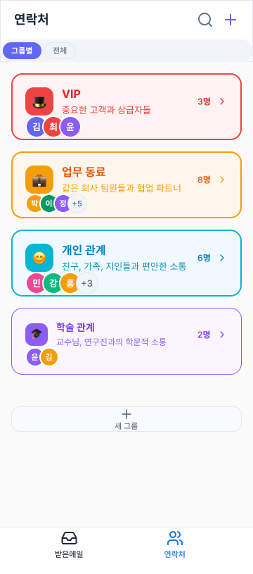
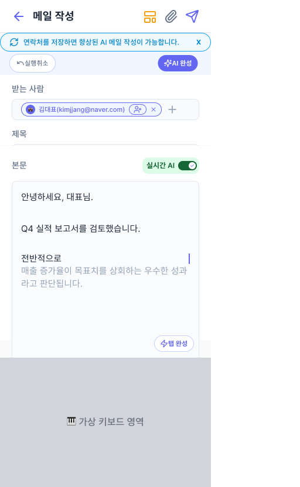
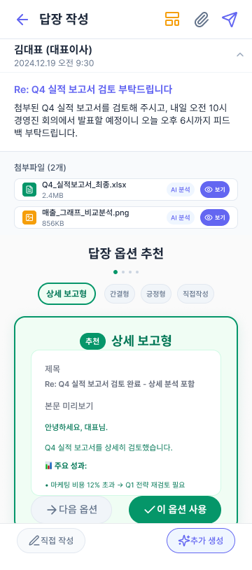

01 / MEDIA
제작 현장 이해
시사교양·예능·영화 4편과 EBS 제작 현장에서 기획, 촬영, 섭외, 편집을 경험했습니다.
AI MEDIA PRODUCT PLANNER
영상 제작 현장의 언어와 AI 제품 개발의 언어를 모두 이해하며, 제작자의 의도와 시청자의 경험을 연결하는 제품을 기획합니다.
지원 직무와 연결되는 세 가지 경험콘텐츠를 직접 만들어 보았고, 사용자의 문제를 AI 제품 요구사항으로 바꾸어 보았으며, 개발자와 함께 실제로 작동하는 서비스를 구현했습니다.
01 / MEDIA
시사교양·예능·영화 4편과 EBS 제작 현장에서 기획, 촬영, 섭외, 편집을 경험했습니다.
02 / PRODUCT
사용자 조사에서 문제를 찾고, AI의 입력·판단·출력 구조와 검증 지표를 설계했습니다.
03 / BUILD
기획과 UI에 머무르지 않고 Android와 AI 백엔드 구현까지 참여해 제품의 제약을 이해했습니다.
VIDEO PRODUCTION
2년 동안 시사교양·예능·영화 4편을 제작하고, EBS 제작 현장에서 아이템 기획부터 촬영·편집까지 경험했습니다.
01 · FORMAT & PERSPECTIVE
2045년에 발견된 2020년의 기록물은 어떤 모습일까?
뉴스, 비대면 브이로그, 미래의 AI 화자를 교차해 코로나 시대의 일상과 그 이면의 혐오 문제를 담은 페이크 다큐멘터리를 기획했습니다.
전체 영상 보기02 · PEOPLE & DIRECTION
직접 만나지 않고도 타인과 연결될 수 있을까?
서로 다른 사람들이 온라인에서 관계를 쌓는 과정을 전면 비대면으로 촬영했습니다. 출연진 섭외와 인터뷰를 맡으며, 좋은 장면 이전에 신뢰가 설계되어야 한다는 것을 배웠습니다.
기획안 보기03 · BROADCAST WORKFLOW
한 편의 콘텐츠는 조직 안에서 어떻게 완성되는가?
매주 방송 아이템을 조사하고 출연자와 장소를 섭외했으며, 현장 운영과 후반 작업을 지원했습니다. 본 방송과 다른 시청 환경을 고려해 유튜브용 영상을 직접 제작했습니다.
방송 본편 보기한 편을 완성하는 방법에서 더 나아가,
문제를 제품으로 해결하는 방법을 배우기 시작했습니다.
AI PRODUCT PLANNING
AI를 하나의 기능으로 붙이는 데서 끝내지 않고, 어떤 맥락을 입력받아 무엇을 판단하고 어떻게 검증할지 제품의 흐름으로 정의했습니다.
01 · CONTEXT-AWARE WRITING
누구에게 보내는지 이해해야, AI도 나다운 메일을 쓸 수 있습니다.
기존 AI 메일 도구가 작성 내용에는 반응하지만 수신자와의 관계와 사용자의 문체는 이해하지 못한다는 문제에서 출발했습니다. 조사, 요구사항 정의, AI 생성 방식 개선, 실제 앱 구현과 테스트까지 수행했습니다.
* 92%는 소규모 사용성 테스트 결과이며, 후속 검증이 필요한 탐색적 지표입니다.



02 · EXPLAINABLE AI MATCHING
서류에 없는 역량과 조직의 인재상을 인터뷰로 구조화해, 매칭의 근거를 만들었습니다.
기업은 서류만으로 지원자의 실제 역량을 검증하기 어렵고, 필요한 인재상도 구체화하지 못합니다. FitConnect는 인재와 기업을 각각 AI 인터뷰해 역량 카드와 공고 카드를 만들고, 여섯 가지 적합도 기준으로 비교해 추천 이유와 추가 검증 질문까지 제시하는 채용 플랫폼입니다.
지원자는 역량과 경험을, 기업은 포지션 요구와 문화 기준을 답합니다.
답변과 프로필을 반영해 다음 질문을 만들고, Validator가 질문의 적합성을 점검합니다.
여섯 축의 적합도와 함께 매칭 근거·검증 포인트·후속 질문을 제시합니다.
AI × VIDEO · ONGOING RESEARCH
영상 제작의 판단 과정과 AI 제품 설계 경험을 결합해, 생성 결과를 더 잘 만들기 위한 ‘다음 결정’을 돕는 도구를 연구하고 있습니다.
CREATOR TOOL, AUDIENCE PERSPECTIVE
생성형 AI는 하나의 결과 안에서 이야기, 미장센, 촬영과 편집에 관한 여러 결정을 동시에 만들어냅니다. 제작자는 결과가 어색하다는 사실은 알아도 무엇을 어떻게 수정해야 하는지 판단하기 어렵습니다.
SceneLens는 제작자의 의도와 관객의 해석 사이의 차이를 드러내고, 수정 가능한 제작 언어로 다시 연결합니다.
인물의 거리감은 전달되지만, 의도한 긴장보다 단절된 관계로 해석될 가능성이 있습니다.
두 인물의 시선 방향과 프레임 내 간격을 함께 조정해 관계의 긴장을 구체화합니다.
장면에서 전달하려는 이야기와 감정을 제작자가 먼저 명시합니다.
생성 결과가 실제로 어떻게 읽힐 수 있는지 여러 영화적 관점에서 확인합니다.
모호한 불만을 구체적인 연출 요소와 다음 수정 행동으로 전환합니다.